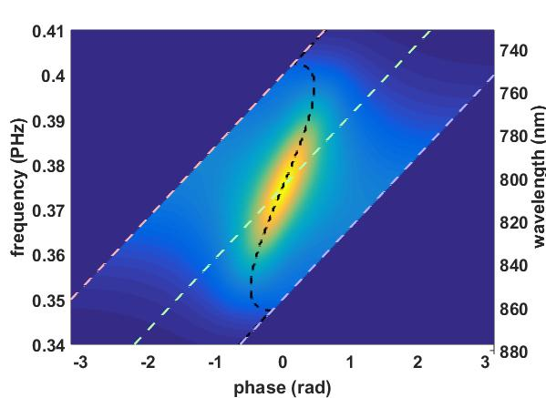

The Gmiips Matlab class

Gmiips is a Matlab class for simulating femtosecond laser pulse compression using Gated-Multiphoton Intrapulse Interference Phase Scan (G-MIIPS) [1]. MIIPS is a pulse compression and characterization technique invented by the group of Dantus [2], and commercialized by Biophotonic Solutions. G-MIIPS is a techique based on MIIPS developed at the LMU University of Munich. It is generally more accurate and particularly suited for broadband and highly distorted pulses.
Note that the Gmiips software is not related to the original MIIPS software and it is only meant to be a tool for research. People interested in purchasing the original MIIPS software or a complete MIIPS solution for femtosecond pulse compression can find more details in the webpage of Biophotonic Solutions.
MIIPS
MIIPS is a pulse characterization technique based on Second Harmonic Generation (SHG) and femtosecond pulse-shaping. It is based on the idea is that the SHG intensity at a certain frequency is maximum if, at that frequency, the second derivative of the spectral phase is null. The second derivative of the spectral phase with respect to the angular frequency is also called group delay dispersion or simply GDD.
A MIIPS measurements consists of modulating the spectral phase of the laser pulse while simultaneously recording SHG spectra. The modulation function is typically a sinusoid which is scanned across the laser spectrum. By stacking together all the measured spectra one obtains a map with on one axes the frequency and on the other axes a scanning parameter. These kind of data are known as "MIIPS traces" because they contain well defined traces where the SHG is maximum. The analysis of the position of the MIIPS traces gives an estimate of the GDD for each spectral component of the laser pulse.
The modulation function can be written as:

where  is the modulation amplitude,
is the modulation amplitude,  is the
modulation frequency (expressed in units of time) and
is the
modulation frequency (expressed in units of time) and  is a
scanning parameter.
is a
scanning parameter.
G-MIIPS
G-MIIPS is based on the observation that MIIPS is not very accurate when measuring structured broad-band pulses. The accuracy can improved by reducing the bandwidth of the laser using an amplitude 'gate', which is scanned across the laser specrum, alongside the phase modulation.
The most common choice for the scanning gate is the Gaussian function:
![\$\\exp\\left\[-\\left(\\tau (\\omega-\\omega\_0) - \\psi\\right)\^2 /
\\sigma\^2\\right\]\$](./manual/gmiips_overview_eq12530219416731055256.png)
Software Requirements:
The LaserPulse class must be present in the matlab search path. The LaserPulse class is open source and can be downloaded on GitHub.
Bibliography:
1) A. Comin et al. "Compression of ultrashort laser pulses via gated multiphoton intrapulse interference phase scans" JOSA B 31, 1118-1125 (2014)
2) M. Dantus et al. "Measurement and Repair: The Femtosecond Wheatstone Bridge" OE Magazine 9 (2003)